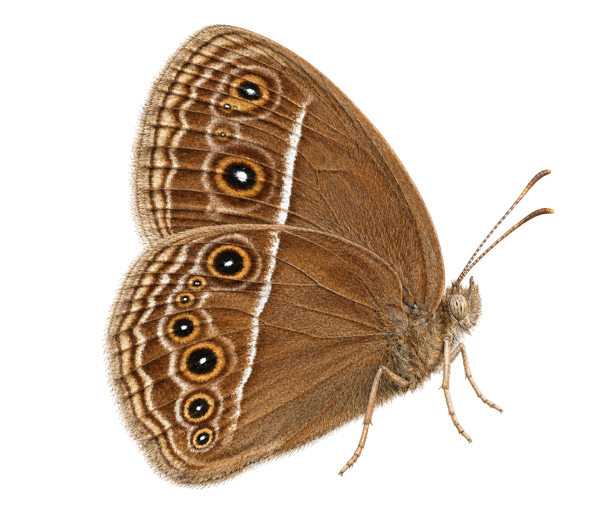

ジャノメチョウ類 · 140 / 165
ヒメヒトツメジャノメ
Mycalesis perseus

特徴・見分け方
褐色のジャノメチョウ類。地域資料には成虫標本が掲載され、同属の種との慎重な比較が必要。
雌雄の違い
今回確認した資料では、確実に使える外見上の雌雄差は未確認。
大きさ
開張40～48mm（インド・ペンチ保護区の図鑑での種の目安）。沖縄採集個体の測定範囲ではない。
沖縄の島別記録
石垣島と与那国島に記録。石垣島の1983年採集個体が日本初記録として紹介されている。
生息環境
県内で好む環境を特定できるだけの資料は今回未確認。
生態・識別上の補足
少数の飛来記録として読む。現在の定着や毎年の発生を示すものではない。
幼虫・食草
今回確認した県内資料には食草の具体的な記載がない。県内での幼虫情報は未確認。
参照元・参考資料
- 沖縄蝶類生態図鑑：ヒメヒトツメジャノメ
資料内の参照日: 2026-11-10 - Pench Tiger Reserve: Butterfly pocket guide
資料内の参照日: 2026-11-10
掲載内容は提供データ（2026年11月10日更新）に基づきます。記録島は現在の定着や観察の容易さを保証しません。イラストは参考表現で、同定には実物の形態と参照資料を併せて確認してください。